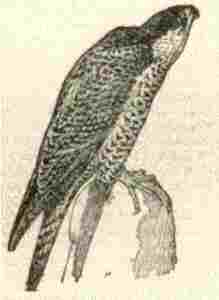

Ar Falc'hun

Ton
|
1.Taget ar yar gant ar falc'hun,
|
11. E c'hwreg gantan er penn araog,
Ganti war he skoaz zehou eur c'hrog, Hag hi o kana tre ma yee: "Timad, timad, va bugale! 12. N'eo ket vit mond da glask o boued, Em-eus va zregont mab ganet; N'eo ket evid dougen keuneud, O na mein benn-rez kennebeud! 13. N'eo ket evit dougen ar zamm Emaint bet ganet gant ho mamm, N'eo ket evit pila lann glaz, Pila lann kriz gant ho zrei noaz; 14. N'eo ket a-hend-all evit peuri Mirc'hed, chas-red hag evned kriz; Nemed da laza 'r vac'herien, Em-eus-me ganet va mibien!"- 15. Ha d'euz eun eil tan d'egile A eent héd-ha-héd d'ar menez: -Timad! timad! boud! boud! you! you! Tan ruz war baotred ar gwirioù!- 16. O tont d'an traon gant ar menez Tri mil ha kant a oa aneze; Ha pa oant digoueet e Langoad, E oant nao mil en eur bagad. 17. Pa oant digoueet da Geraran, E oant tregont mil ha tri c'hant; Ha Kado a vennaz neuze: -Ai'ta aman 'n hini eo!- 18. N'oa ket e gomz peurlavaret, Tri c'hant karrad lann oa kaset Ha laket tro-war-dro d'ar ger Hag an tan enni, fol ha têr; 19. Eun tan ken fol, eun tan ken têr Ma teuze ennan ar ferc'hier, Ma strake ennan an eskern Evel re zaonet en ifern! 20. Ma yudent gant kounnar en noz Evel bleizi kouezet er foz; Ha tronoz pa zavaz an heol, Oa 'r gwiraerien luduet oll! |